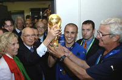

привет участникам соревнований! |
|
Виды спорта: |
ФутболФутбо́л (англ. football от foot «ступня» + ball «мяч») — командный вид спорта, в котором целью является забить мяч в ворота соперника ногами или другими частями тела (кроме рук) большее количество раз, чем команда соперника. В настоящее время самый популярный и массовый вид спорта в мире. Согласно заявлению ФИФА, в 2001 году в футбол на планете играло около 250 миллионов человек. Из них более 20 миллионов — женщины. Зарегистрировано около 1,5 миллиона команд и 300 000 профессиональных клубов. По заявлению президента ФИФА Й. Блаттера, общее количество игроков в мире в мае 2004 г. составило 250 млн человек, что соответствует 4,1 % населения Земли. |
главное не победа, а участие! |
|